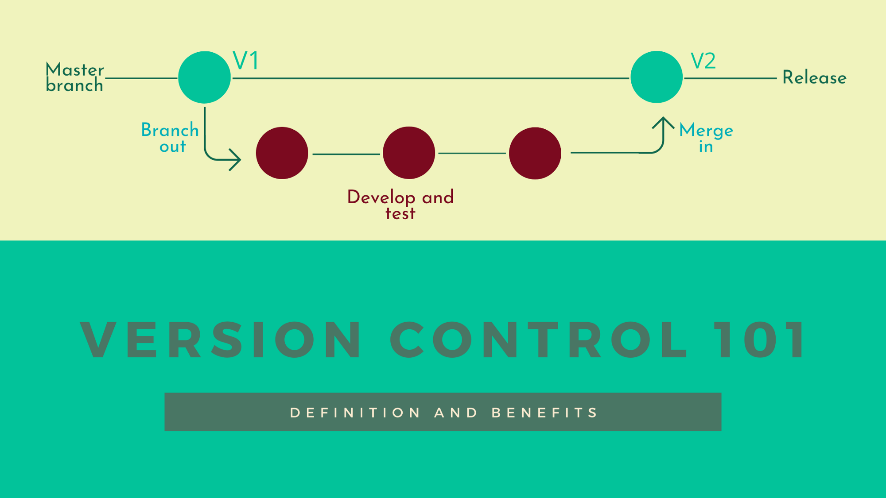

A version controller is a system that allows us to keep a record of the modifications we make to a file or set of files over time so that it is possible to retrieve specific versions at a later date. It is typically used in software development environments, but can be very useful for anyone who needs robust control over the task at hand.
